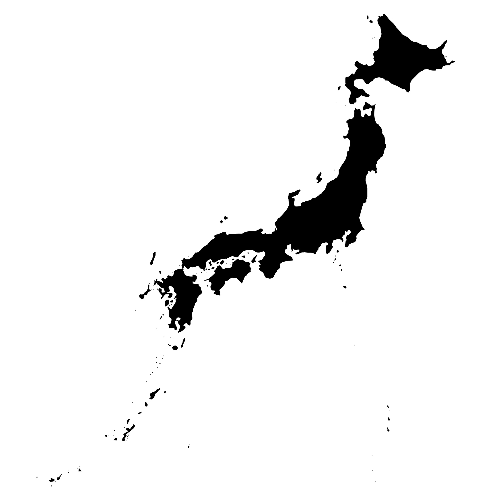

Japan Coral Bleaching Events 日本のサンゴ白化イベント
Seven major bleaching events since 1998 1998年以降、7回の大規模白化が発生

Sekisei Lagoon
石西礁湖
97.2% bleaching in 2016, coral cover now at record low 13.7%
2016年に97.2%白化、被度は過去最低の13.7%
Sesoko Island
瀬底島
90% bleaching/mortality in 1998, DHW 3.3 threshold identified
1998年に90%白化・死亡、DHW 3.3で白化開始
Kerama Islands
慶良間諸島
Minor bleaching in 2007, affected in 2024
2007年は軽度、2024年に影響
Amami Oshima
奄美大島
Coral cover decreased 10+ points after 2017
2017年後に被度10ポイント以上減少
Okinawa Main Island
沖縄本島
90%+ bleaching in shallow waters (2024, unprecedented)
浅瀬で90%以上白化（2024年、記録にない被害）
Ogasawara Islands
小笠原諸島
First major bleaching in 2009, up to 70% at some sites
2009年に初の大規模白化、一部で70%
Kushimoto
串本
Near the northern limit of coral communities, affected in 1998
サンゴ群集の北限域、1998年に影響
Severity 深刻度
Severity 深刻度
Japan's Coral Reefs 日本のサンゴ礁
Japan's coral reefs span from the subtropical Ryukyu Islands (Okinawa, Yaeyama) to the oceanic Ogasawara Islands, and even reach temperate zones like Kushimoto in Wakayama Prefecture, near the northern limit of reef-building coral communities in the western Pacific. This unique position at the boundary between tropical and temperate waters makes Japanese reefs particularly sensitive indicators of ocean warming.
日本のサンゴ礁は、亜熱帯の琉球列島（沖縄、八重山）から海洋性の小笠原諸島、さらには和歌山県串本など温帯域にまで分布しています。串本は、西太平洋における造礁サンゴ群集の北限域のひとつです。熱帯と温帯の境界に位置するこの特殊性により、日本のサンゴ礁は海洋温暖化の特に敏感な指標となっています。
Sekisei Lagoon, located between Ishigaki and Iriomote islands, is Japan's largest coral reef—approximately 20km across with over 360 coral species. It supports critical ecosystem services including fisheries, tourism, and coastal protection from typhoon waves. The health of this reef serves as a bellwether for coral reefs throughout Japan.
石垣島と西表島の間に位置する石西礁湖は、日本最大のサンゴ礁です。約20kmにわたり360種以上のサンゴが生息し、漁業、観光、台風時の防波など重要な生態系サービスを支えています。このサンゴ礁の健全性は、日本全体のサンゴ礁の指標となっています。
Timeline of Japan Bleaching Events 日本の白化イベント年表
1998 — First Global Bleaching 1998年 — 第1回グローバル白化
70% bleached 70%白化Japan's first experience of truly global-scale coral bleaching. Triggered by one of the strongest El Niño events on record, temperatures exceeded 30°C for extended periods throughout summer. Sesoko Island recorded approximately 90% bleaching and mortality. Sekisei Lagoon saw about 70% bleaching, with Acropora mortality reaching 40%. This event brought coral bleaching into national consciousness and established monitoring systems.
日本が初めて経験した真の意味でのグローバル規模のサンゴ白化。観測史上最強クラスのエルニーニョにより、夏季を通じて30℃超が継続しました。瀬底島では約90%が白化・死亡。石西礁湖では約70%が白化し、ミドリイシ類の死亡率は40%に達しました。この出来事により、サンゴ白化が国内で広く認識されるようになり、モニタリング体制の構築が始まりました。
Affected areas 被害地域
- Okinawa Prefecture (entire region)
- 沖縄県全域
- Sesoko Island (85% cover decline)
- 瀬底島（被覆率85%低下）
- Sekisei Lagoon (8% biomass loss)
- 石西礁湖（現存量8%減）
- Kushimoto (northern limit affected)
- 串本（北限域も影響）
Key findings 主な知見
- El Niño was the primary driver
- エルニーニョが主因
- Night temperatures also abnormally high
- 夜間も外洋も異常高温
- Monitoring systems began development
- モニタリング体制の構築開始
- Established baseline for future comparisons
- 将来比較のベースライン確立
2007 — Yaeyama Regional Bleaching 2007年 — 八重山海域白化
30%+ mortality 30%以上死亡A Japan-local event not connected to global bleaching. Centered on the Yaeyama region, particularly Sekisei Lagoon and around Iriomote Island. Even heat-resistant massive corals like Porites and Favia bleached. Okinawa Main Island and Kerama saw only minor effects. Satellite analysis showed about 70% of corals disappeared over the 5 years through 2008.
グローバル白化とは連動しない日本ローカルのイベント。八重山周辺海域、特に石西礁湖・西表島周辺が中心でした。通常は熱耐性の高いハマサンゴ・キクメイシ・アオサンゴまで白化。沖縄本島・慶良間は軽度の白化にとどまりました。衛星分析では、2008年までの5年間でサンゴの約7割が消失したとされています。
Characteristics 特徴
- Japan-local event (not global)
- 日本ローカル（グローバルではない）
- Heat-resistant corals also bleached
- 耐熱性サンゴも白化
- Ogasawara unaffected until September
- 小笠原は9月上旬まで白化なし
2009 — First Ogasawara Bleaching 2009年 — 小笠原初の局所白化
Up to 70% 最大70%The first significant bleaching event recorded in Ogasawara since 2003. Surveyed August 20-25 at 8 sites in the Mukojima and Chichijima island groups. West coast of Yomejima recorded 70% bleaching. Coral species Montipora and Acropora showed high vulnerability, while Pocillopora (cauliflower coral) showed resistance. The worst in 6 years of monitoring, caused by sustained high temperatures in July-August and warm water eddy approach.
2003年母島大規模白化以来初の深刻な白化イベント。8月20〜25日に聟島列島・父島列島海域の8地点を調査。嫁島西岸で70%の白化率を記録。コモンサンゴ・ミドリイシ類が特に脆弱で、ヘラジカハナヤサイサンゴは耐性を示しました。6年間のモニタリングで最大の被害で、7〜8月高水温継続と暖水渦の接近が原因でした。
Causes 原因
- Sustained July-August high temperatures
- 7〜8月の高水温継続
- Warm water eddy approach
- 暖水渦の接近による異常潮位
- Skeletal abnormalities increased vulnerability
- 骨格異常群体で白化耐性低下
2016 — Worst on Record ⭐ 2016年 — 観測史上最悪 ⭐
97% bleached 97%白化The worst bleaching event in Japan's recorded history, part of the 3rd Global Bleaching Event (2014-2017). Sekisei Lagoon recorded 97.2% bleaching in September-October surveys, with approximately 70% mortality. Water temperatures were the highest since observations began in 1946. Sesoko Island saw 100% bleaching at some sites, with DHW 3.3 identified as the bleaching onset threshold. 10 out of 11 coral genera showed 98%+ bleaching/mortality except Lobophyllia.
日本の観測史上最悪の白化イベント。第3回グローバル大規模白化（2014-2017）の一部。石西礁湖では9〜10月調査で97.2%の白化率を記録し、最終的な死亡率は約70%に達しました。水温は1946年の観測開始以来最高を記録。瀬底島では100%白化の地点があり、DHW 3.3で白化開始することが確認されました。コブハマサンゴ以外の10属で98%以上が白化・死亡。
Key findings 主な知見
- Highest SST since 1946 observations began
- 1946年観測開始以来最高の水温
- Part of 3rd Global Bleaching Event
- 第3回グローバル白化の一部
- Massive corals died (longer recovery)
- 塊状サンゴも死亡（回復長期化）
- Sesoko DHW 3.3 threshold established
- 瀬底でDHW 3.3閾値を確認
Species impact 種別被害
- Acropora: 98%+ bleached/died
- ミドリイシ類: 98%以上白化・死亡
- Porites: Also heavily affected
- ハマサンゴ類: 深刻な被害
- Lobophyllia: Only resistant genus
- コブハマサンゴ: 唯一の耐性属
2017 — Consecutive Bleaching 2017年 — 連続白化
Wide-ranging 広範囲Consecutive bleaching following 2016, extending from Amami Oshima to Sekisei Lagoon across the Ryukyu Islands. Bleaching occurred at all survey sites in Sekisei Lagoon, with White Syndrome disease prevalent. Amami Oshima coral cover decreased by 10+ points in subsequent surveys. NOAA forecast showed "bleaching likely" levels around Iriomote Island.
2016年に続く連続白化。琉球列島全域（奄美大島〜石西礁湖）に影響が及びました。石西礁湖では全調査地点で白化が発生し、ホワイトシンドロームが多発。奄美大島では翌年の補足調査で被度が10ポイント以上減少していることが確認されました。NOAA予測で西表島周辺が「白化発生可能レベル」に達していました。
Characteristics 特徴
- Consecutive year after 2016
- 2016年からの連続白化
- White Syndrome disease prevalent
- ホワイトシンドローム多発
- Zero recovery period
- 回復期間ゼロ
2022 — Major Bleaching Returns 2022年 — 再び大規模白化
93% bleached 93%白化Sekisei Lagoon recorded 92.8% bleaching in September surveys. Coral cover declined from 26.2% (2021) to 21.6% (September) to 17.0% (December). Typhoons No. 11 and 12 helped lower water temperatures, mitigating damage somewhat. Post-2016 species composition showed a shift toward more heat-tolerant species.
石西礁湖で9月調査時に92.8%の白化率を記録。被度は26.2%（2021年）→21.6%（9月）→17.0%（12月）と低下しました。台風11号・12号が水温を下げ、被害がやや緩和されました。2016年以降、高水温に強い種への種構成変化が確認されました。
Mitigating factors 緩和要因
- Typhoons lowered water temperature
- 台風が水温を低下
- Species shift toward heat tolerance
- 熱耐性種への種構成変化
2024 — 4th Global Bleaching 2024年 — 第4回グローバル白化
Record low cover 過去最低被度Part of the largest global bleaching event in history (4th Global Bleaching, 2023–mid-2025). Sekisei Lagoon recorded 84.0% bleaching in September, declining to 65.5% by December as some corals recovered. However, mortality reached 25.5%, and coral cover dropped to a record low of 13.7%. Water temperature exceeded 30°C for 90 days (longest ever, far exceeding 2016 and 2022). Record SST of 31.9°C on July 20. Okinawa Main Island saw unprecedented 90%+ bleaching in shallow waters. May 2025 follow-up survey found almost no mature corals, making spawning-based recovery unlikely.
観測史上最大規模のグローバル白化イベント（第4回グローバル白化、2023年〜2025年半ば）の一部。石西礁湖では9月調査で84.0%の白化率を記録し、12月には回復により65.5%に低下しましたが、死亡率は25.5%に達し、被度は過去最低の13.7%まで低下しました。30℃以上の継続日数は90日間と過去最長を記録（2016年・2022年を大幅超過）。7月20日に最高水温31.9℃を記録。沖縄本島では浅瀬で90%以上が白化（記録にない被害）。2025年5月の追跡調査では成熟サンゴがほぼ見つからず、産卵による回復は見込めない状況です。
Critical findings 深刻な知見
- Record low coral cover: 13.7%
- 過去最低の被度: 13.7%
- Heat stress extended into late September
- 9月下旬まで30℃超継続
- Only 2 years since last event (2022)
- 前回（2022年）からわずか2年
- Part of 4th Global Bleaching Event
- 第4回グローバル白化の一部
Recovery outlook 回復の見通し
- Mature corals nearly absent
- 成熟サンゴがほぼ不在
- Spawning-based recovery unlikely
- 産卵による回復は困難
- Okinawa Main Island: unprecedented damage
- 沖縄本島: 記録にない被害
2025–2026 — After the Heatwave ⭐ 2025〜2026年 — 熱波のあと ⭐
Slow recovery 回復は緩慢NOAA concluded in June 2026 that the 4th global bleaching event most likely ended in mid-2025, after bleaching-level heat stress had reached 84% of the world's reef area. In Sekisei Lagoon, summer 2025 was cooler than 2024 (74 days at or above 30°C, versus 90) and no conspicuous bleaching was recorded; at one site, bleaching fell from 84.0% to 9.3% year on year. Recovery is slow, however: colony counts of every monitored species fell from 2024, and one-year-old Acropora recruits remained scarce. In December 2025, an unusual winter bleaching was reported along the east coast of Okinawa Island (Oura Bay, off the Katsuren Peninsula); its cause is unresolved. In August 2026 a University of the Ryukyus-led study confirmed that the 2024 heatwave bleached corals from Okinawa to temperate Honshu, with high-latitude sites reaching their highest heat stress in about 40 years; at Sesoko Island, live coral cover fell from 22% to 6%.
NOAAは2026年6月、第4回グローバル白化は2025年半ばにほぼ終息したとの見解を示しました（白化レベルの熱ストレスが及んだのは世界のサンゴ礁面積の84%）。石西礁湖の2025年夏は2024年より低温で（30℃以上は74日、前年90日）、目立った白化は見られず、ある地点では白化率が84.0%から9.3%へ下がりました。ただし回復は緩やかです。調査対象の全種で群体数が前年より減り、ミドリイシ類の1歳稚サンゴも少ないままでした。2025年12月には沖縄本島東海岸（大浦湾、勝連半島沖）で冬季の白化という異例の事態が報告され、原因はまだ分かっていません。2026年8月には琉球大学などの研究で、2024年の海洋熱波が沖縄から本州の温帯域まで白化を引き起こし、高緯度の地点ではおよそ40年で最大の熱ストレスに達したことが示されました。瀬底島では生きたサンゴの被度が22%から6%に落ちています。
What the 2025 surveys showed 2025年の調査が示したこと
- No conspicuous bleaching in Sekisei Lagoon
- 石西礁湖で目立った白化なし
- Bleached colonies recovered rather than died
- 白化群体は死亡より回復が多かった
- Colony counts down from 2024 for every species
- 全種で群体数が2024年より減少
- Larval settlement up, mainly in the north of the lagoon
- 稚サンゴの着生は北部中心に増加
Summer 2026: what this site's data show 2026年夏：このサイトのデータから
- Satellite DHW peaked at 8.6 (Kushimoto) and 8.4 (Ogasawara); with NOAA's standard calculation, 6.3 and 7.8 — above the bleaching alert threshold of DHW 4
- 衛星DHWのピークは串本8.6、小笠原8.4。NOAA標準の算出法でも6.3、7.8で、白化警報の閾値DHW 4を超える
- Yet days above 30°C were few there (1 and 11)
- 一方、30℃超の日数は少ない（串本1日、小笠原11日）
- Ryukyu sites stayed below DHW 5
- 琉球列島の地点はDHW 5未満
- Field survey results for 2026 are not yet published
- 2026年の現地調査結果は未公表
2026 figures are this site's own calculation from NASA MUR SST (8-week window without the 1°C cut-off, following Lachs et al. 2021; NOAA's standard uses 12 weeks and counts only anomalies of 1°C or more); see the DHW and extreme days pages. Satellite DHW measures departure from each site's own climatology, so a cool site can reach high DHW without extreme absolute temperatures; see the thermal gap.
2026年の数値は、NASA MUR SSTからこのサイトで算出したものです（8週間積算・1℃カットオフなし、Lachs et al. 2021準拠。NOAA標準は12週間・1℃以上の偏差のみを積算）。DHW、極端水温日数のページも参照してください。衛星DHWは各地点の平年値からの偏差を積算するため、平年が低い地点では絶対温度が極端でなくても高い値になります。thermal gapも参照してください。
The interval between major bleaching events in Japan has dramatically shortened: 1998 → 2007 (9 years) → 2016 (9 years) → 2022 (6 years) → 2024 (2 years). Coral recovery typically requires 10-15 years, meaning current frequency doesn't allow sufficient recovery time. Sekisei Lagoon coral cover has declined from ~50% (2004) to 13.7% (2024) — the lowest on record.
日本における大規模白化の発生間隔は劇的に短縮しています：1998年→2007年（9年）→2016年（9年）→2022年（6年）→2024年（2年）。サンゴの回復には通常10-15年を要するため、現在の頻度では回復が追いつきません。石西礁湖の被度は約50%（2004年）→13.7%（2024年）と、観測史上最低まで低下しました。
📊 Sekisei Lagoon Coral Cover Decline 📊 石西礁湖 サンゴ被度の推移
1970s-2024: From ~80% (pristine) to record low 13.7% — over 80% decline 1970年代〜2024年：原生状態の約80%から過去最低13.7%へ — 80%以上減少
Data: Ministry of the Environment, Monitoring Sites 1000 | Dashed line: estimated, solid line: observed. Red dots: bleaching years データ：環境省、モニタリングサイト1000 ｜ 点線：推定値、実線：実測値。赤い点：白化イベント年
🌱 Signs of Resilience 🌱 回復力の兆し
References 参考文献
- Ministry of the Environment - Sekisei Lagoon Surveys 環境省 石西礁湖調査 (2024/9, 2024/12, 2022)
- Ministry of the Environment - Monitoring Site 1000, Sekisei Lagoon report FY2025 (March 2026) 環境省 モニタリングサイト1000 石西礁湖 2025年度報告書（2026年3月） PDF; Sekisei Lagoon Nature Restoration Council, 36th meeting, material 5-1 石西礁湖自然再生協議会 第36回 資料5-1 PDF
- NOAA NESDIS (2026). World's fourth mass coral bleaching event likely ended in 2025 NOAA NESDIS（2026）第4回世界的白化は2025年にほぼ終息 nesdis.noaa.gov
- Widespread coral bleaching across subtropical and temperate Japan under record marine heat stress (2026). Scientific Reports 琉球大学ほか（2026）2024年の記録的海洋熱波による全国的なサンゴ白化. Scientific Reports doi:10.1038/s41598-026-65095-2
- Nature Conservation Society of Japan (2026). Winter bleaching on the east coast of Okinawa Island 日本自然保護協会（2026）冬の沖縄本島東海岸で異例のサンゴ白化現象 nacsj.or.jp
- Fisheries Agency Coral Reef Survey Report H21 水産庁 サンゴ礁調査報告書 H21 PDF
- Monitoring Sites 1000 Coral Reef Survey モニタリングサイト1000 サンゴ礁調査 biodic.go.jp
- Sekisei Lagoon Nature Restoration Council Action Plan 2024-2028 石西礁湖自然再生協議会 行動計画2024-2028
- Yamazato K (2000) Coral bleaching in Okinawa, 1980 vs 1998. Galaxea, JCRS 2:119-124
- Nakamura T (2017) Mass coral bleaching event in Sekisei Lagoon observed in the summer of 2016. J. Japan Coral Reef Soc. 19:29-40
- Sakai K, Singh T et al. (2019) Bleaching and mortality of Sesoko corals. PeerJ 7:e8138. doi:10.7717/peerj.8138
- Japanese Coral Reef Society - 2007 Bleaching Summary 日本サンゴ礁学会 2007年白化まとめ jcrs.jp
- Ogasawara Research Institute - 2009 Report 小笠原自然文化研究所 2009年速報 ogasawara.or.jp
- Yaeyama Mainichi - 2024/2025 coverage 八重山毎日新聞 2024/2025年報道
- Ryukyu Shimpo - 2016 bleaching coverage 琉球新報 2016年白化報道